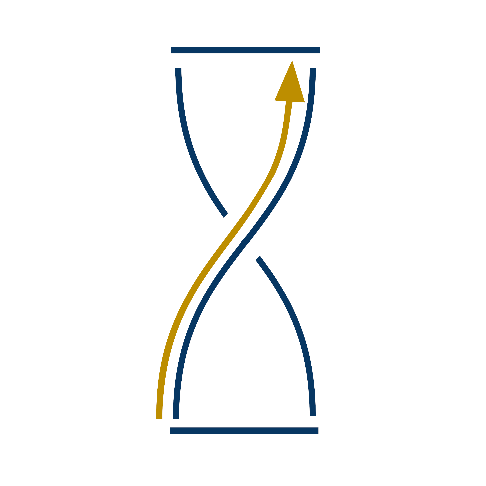

Active and planned development projects for the EM formal language, framework, and tooling ecosystem.
Extended Matrix (Language) — Nodes and node variants formalizing virtual reconstruction. Expandable through new node types. Currently expressed in yEd/GraphML; s3Dgraphy provides a richer property graph underneath. s3Dgraphy JSON config files encode the formal rules and are part of the core language.
Extended Matrix Framework — Tools ecosystem: EMtools (Blender add-on), s3Dgraphy (Python library), 3D Survey Collection (3DSC, photogrammetry & 3D model preparation), Heriverse (online viewer), Tapestry (AI-based proxy rendering), external standalone tools, connectors. Separation of responsibilities enables parallel development.
Governance Cycle — EM advances every 6 months with community validation. A Component is a new node or a tool using/expanding existing nodes. A Development Project impacts one or more Components. Each DP requires a Key Study with open data.
Proposal (with Key Study) → Development → Community Review → Candidate for EM Version → Inclusion
Several Development Projects are funded or developed within StratiGraph, a European project supporting the creation of a collaborative infrastructure for stratigraphic heritage documentation. DPs tagged with StratiGraph were created or advanced as part of this initiative. Use the StratiGraph filter to isolate them.
Documentation • EMtools repo • s3Dgraphy repo • s3Dgraphy on PyPI • 3DSC repo • StratiGraph project